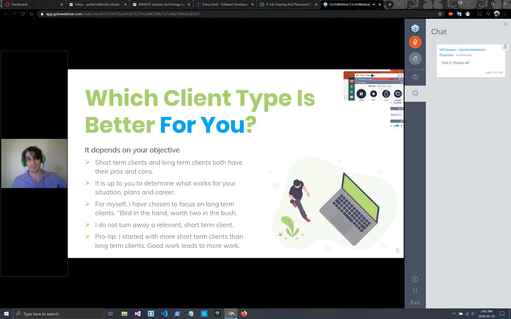

In this Meetup Will was the director for the 3 freelance developers that were giving information on how to start as a freelancer,
what to know as you grow as a developer and how to know what your value is and more. Patricia and Stephen found each other and formed
the studio Concept 33 and Ed Castro was the person who spoke on how to know where to set yourself as a freelance web developer.
This Meetup was about a new startup organization created by web developers in the process of being freelancers and getting your name known.
Patricia and Stephen were from 2 seperate fields. Patircia was a film design major and Stephen was a freelance web designer. They were looking
for a way to get their skills to work for professional celebrities. In other words, they were trying to find a way to advertise the clients with
very high notoriety and be the ones that they wanted to come to for thier packages and services. They offered something that no one else really did.
They would connect with their client personally to take photos of thier clients and either build their web base for them to start and launch or they
would take client to fix a system that was previously built to upgrade to something new when rebranding themselves. Concept 33 was formed by the 2
of them once they relaized how they could combine their two skills together to chase the same goals they set out for. To meet celebrities and be the
freelance interpersonal clients that they want for theur busy lives.

The second part of the Meetup is about how freelancers start their business. What business practices to govern yourself with and how to grow
your freelance name and your enterprise by k nowing your pricing. Knowing what your skills are and how to sell yourself to your client directly.
In order to know you skills they talked about just looking at websites and other people work with you same level of commitment and time. From
that point you shoul continue to practice and if you see something that you like somewhere else then you should recreate it. You learn how to do
and then you can make it you own. Clients want vesatlity, speed and dependability at the end of the day. This was their motto and how they would mock
up their websites in order to have several ready to use or they would create new ones all together. Your portfolio has to be up to date at all times
so that clients can always see you working and you build up your inventory of what you can sell as well.


We will also cover some ideas to do when raising your rates for your business and how to gauge what you are able to do. Then dissect those into
how to sell your work. Do you work hourly for someone or do you sell packages that you offer to people. After everything is said and done, how
do you know if you have enough in your personal web portfolio to get someone to notice you. During this time, Stephen and Will took over to discuss
this topic with everyone. Stephen is a freelancer and Will started off as one and they were offering their insights as to how they got their names
notices in the world and how much work they put into getting where they are now. Stepehen talked offering packages versus offering an hourly rate
depending on the work or the tasl and everything that was required of it. Some key advice were to always raise yoru rates each yeae depending on your
skill level and what you and trying to do. When starting out, it wise to look for local busninesses to do web design, they can always use the extra help
if they like what you are offering.